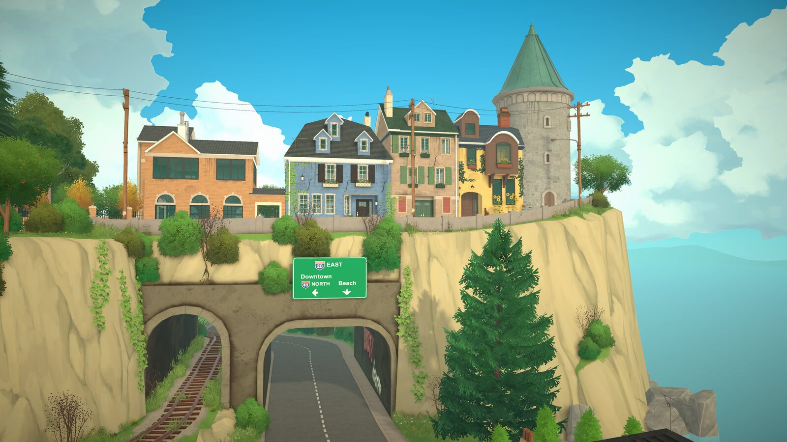

Building basics
The early appeal of Paralives build mode is easy to summarize: it promises more freedom than the old grid-locked habits many life-sim players carry in with them. This guide keeps to the basics that are consistently attached to the game in official material and leaves the fuzzier edge cases clearly marked.
If you are coming from The Sims, the useful comparison is structural, not tribal. The point is not that one game is superior by default; it is that Paralives has been framed around looser wall and placement tools from the start.

What the building pitch is
The broad public pitch for Paralives building is flexibility. Instead of treating every room like a strict grid puzzle, the game has long been presented as a space where wall shapes, angles, and openings can be handled more freely.
That matters because building is one of the clearest places where a life sim can either feel expressive or feel like it is arguing with you. The promise here is less argument.
Confirmed building language to hold onto
| Core theme | Less grid-locked building freedom. |
| Known headline | Free wall placement and more flexible room shaping. |
| Common follow-up | Windows and openings are described as more freely placeable too. |
| Future companion hub | Houses hub for community builds later on. |
Why free walls matter
Free walls are not just a technical bullet point. They change the kinds of homes people bother to attempt. Angled corners, awkward lots, and asymmetrical rooms become normal design choices instead of special cases that fight the toolset.
That is the clearest place where a passing comparison to The Sims helps: many players are used to walls snapping into a more rigid rhythm, so even a small increase in freedom changes how quickly a floor plan feels personal.
What free windows and placement imply
When windows are not chained too tightly to a rigid wall grid, facades get easier to tune. You can think in terms of proportion, sightlines, and the feel of a room instead of constantly negotiating with preset slots.
That does not automatically mean every opening tool behaves exactly the way preview clips suggest, though. It only means the design intent has been consistent enough to talk about at the high level.
For the recolor side of that same building pitch, see the dedicated color wheel & patterns guide, which separates official Early Access color-system facts from older preview assumptions.
How to think about a first build
The easiest way to start is to sketch the shape first and decorate second. In a freer build system, shell decisions do more emotional work than they do in a stricter one, so getting the outline right early pays off.
That also makes it easier to judge whether the game's flexibility is helping you or just giving you too many degrees of freedom at once. A modest starter house is a better teacher than a giant statement build.
Which details still need build checks
Exact tool behavior always needs direct confirmation in the current build. That includes edge cases like snapping rules, how windows behave on unusual angles, and whether any eye-catching dev-preview feature is already public or still a future target.
FAQ
What makes building in Paralives stand out first?
The biggest headline is freedom: walls and room shapes are presented as far less grid-locked than older life sim building systems.
Does Paralives really support free wall placement?
Free wall placement is one of the clearest public building promises attached to Paralives, and it is central to how the game's build mode is described.
Should every building feature from old dev videos be treated as live?
No. If a building feature comes from older preview footage and has not been confirmed in the current build, it should stay behind a visible status note.
Where will community house plans show up later?
Community builds will eventually live in the planned Houses hub once the submission and review flow is ready.